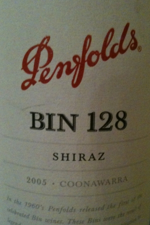

|
Australia >
South Australia
>
Limestone Coast >
Coonawarra >
Penfolds >
Bin 128 Shiraz Coonawarra

2005 Bin 128 Shiraz Coonawarra
Penfolds
Magill, SA
Aged in French oak.
Price: $21
14.5% alcohol
750 ml

2009 tasting - An opaque blackish red with a deep, inviting bouquet, this Shiraz has a well-balanced flavor: chewy yet light, fruity yet soft, and a dry finish. This wine is all a Shiraz can be.
More about Shiraz.
|
|